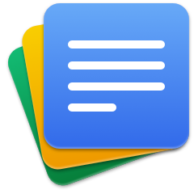
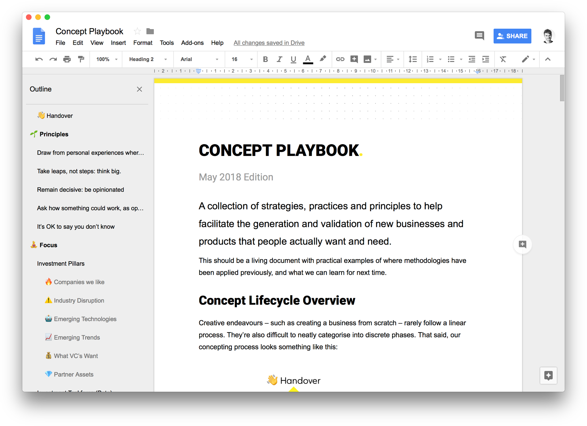
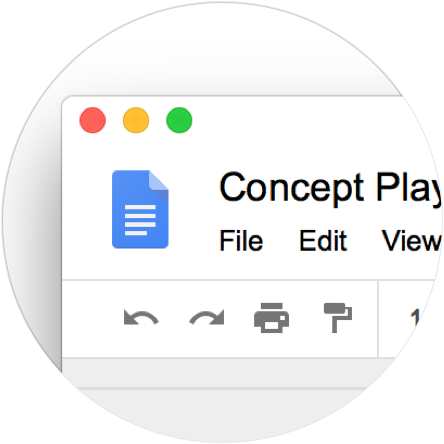

Google Docs for Mac
A standalone Mac wrapper for the suite of Google Drive applications: Doc, Slides and Sheets
Download
Requires macOS 10.13

Use Google Docs as if it were an actual Mac app. Neat!
Lives in the dock

Minimal Window Chrome
Keyboard shorcuts
Download
Requires macOS 10.13